Tepic & Toronto: Dos Horizontes
Un recorrido interdisciplinario por el valle volcánico del Pacífico mexicano y la metrópolis cosmopolita del Lago Ontario. Dos ritmos, dos climas y una rica diversidad humana.

Ubicación Tepic
Valle de Matatipac
Altitud: 915 msnm | Clima Cálido-TempladoUbicación Toronto
Lago Ontario
Altitud: 76 msnm | Clima Continental HúmedoPoblación Tepic
~425,000 hab.
Escala urbana media y comunitariaPoblación Toronto
~3,000,000 hab.
Metro GTA: 6.7 Millones | MegápolisMapa Interactivo Georreferenciado
Contexto Geográfico
Tepic está enclavada en un valle rodeado de cerros y la imponente reserva ecológica volcánica del Cerro de San Juan. Su entorno propicia vegetación exuberante y clima templado.
Ubicada en la orilla noroeste del Lago Ontario, Toronto se despliega sobre un terreno llano cortado por cañadas (ravines) y ríos como el Don y el Humber, conectando con los Grandes Lagos.
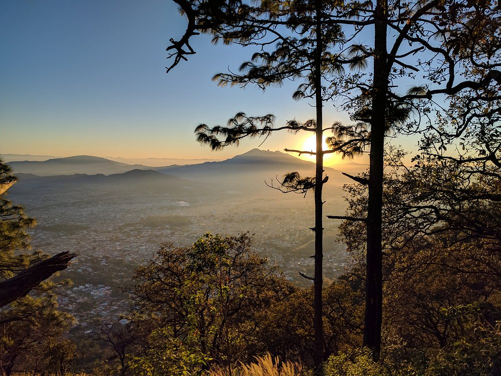
Cerro de San Juan
Reserva Ecológica Cerro de San Juan, pulmón natural de Tepic.
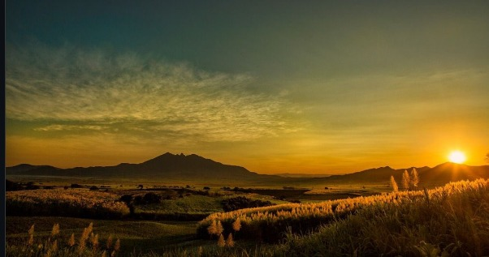
Valle de Matatipac
Panorámica urbana del Valle de Matatipac.
Lago Ontario
Frente de agua y puerto en el Lago Ontario.
Toronto Skyline
Horizonte financiero de Toronto con la CN Tower.
Tradición Wixárika y Mestizaje
Tepic es la puerta de entrada a los pueblos originarios Wixárika (Huichol), Náayeri (Cora), O'dam y Au'dam. El arte sagrado de chaquira y estambre, junto a la gastronomía del mar y la sierra, definen su alma cultural.
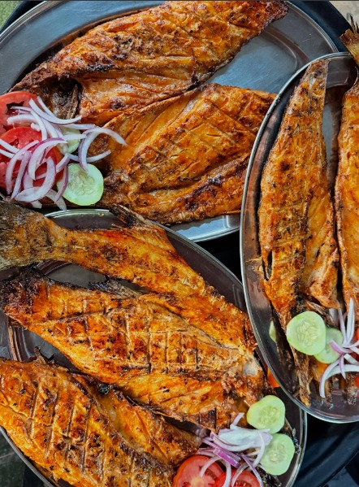
Pescado Zarandeado
Pescado zarandeado, sopes de ostión y pan de plátano.Mosaico Multicultural y Festivales
Más del 50% de la población de Toronto nació fuera de Canadá. Barrios icónicos como Chinatown, Little Italy, Greektown y Kensington Market reflejan una convivencia cosmopolita enriquecida por festivales de cine (TIFF) y artes.
Barrio Chino
Barrio Chino.Lugares Emblemáticos y Atractivos
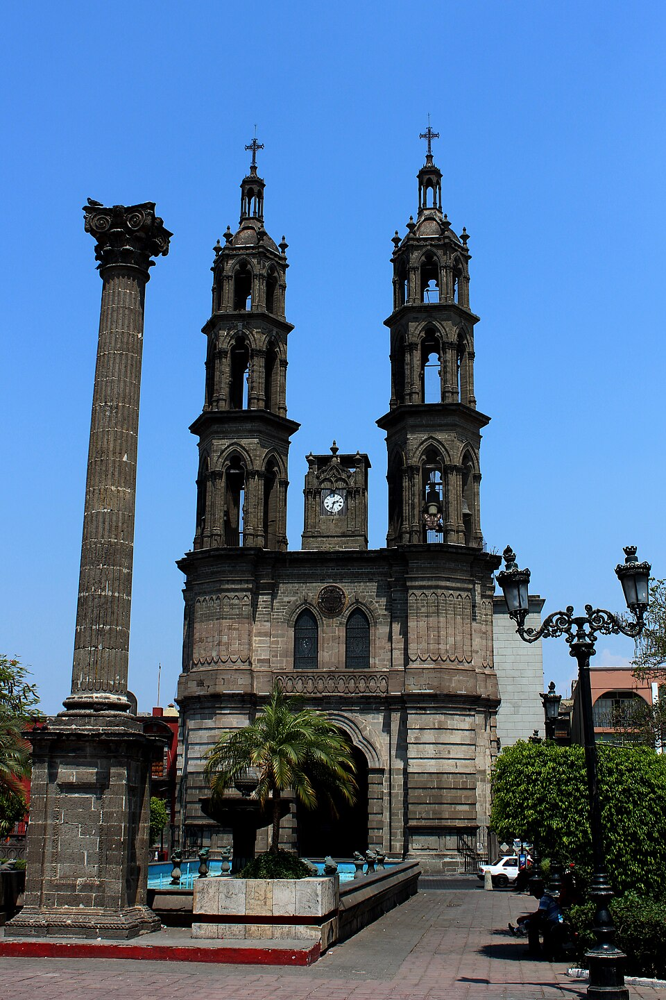
Catedral de Tepic
Catedral neogótica con sus dos torres características en el centro histórico.
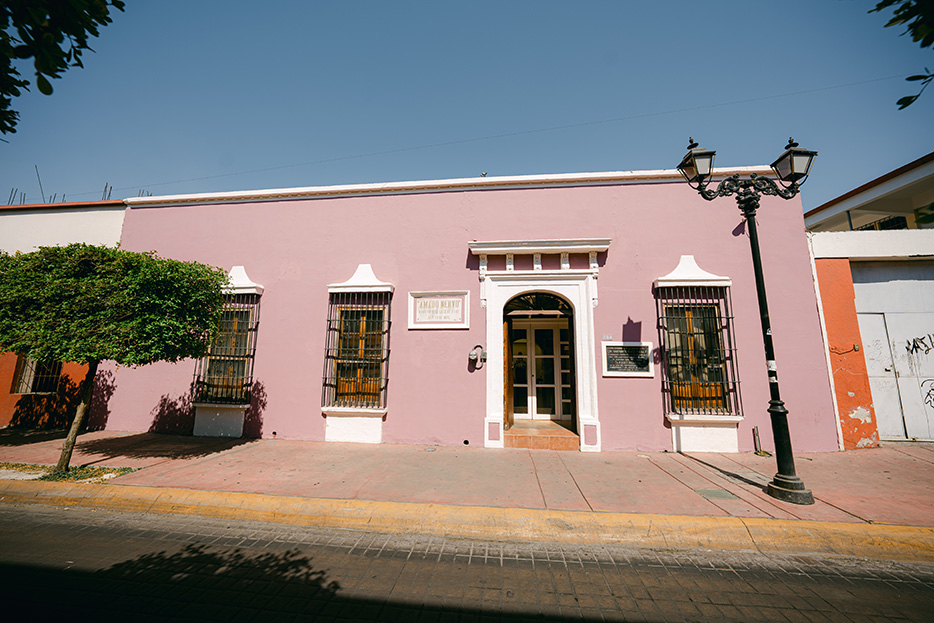
Casa Museo Amado Nervo
Cuna del célebre poeta nayarita, patrimonio literario colonial.
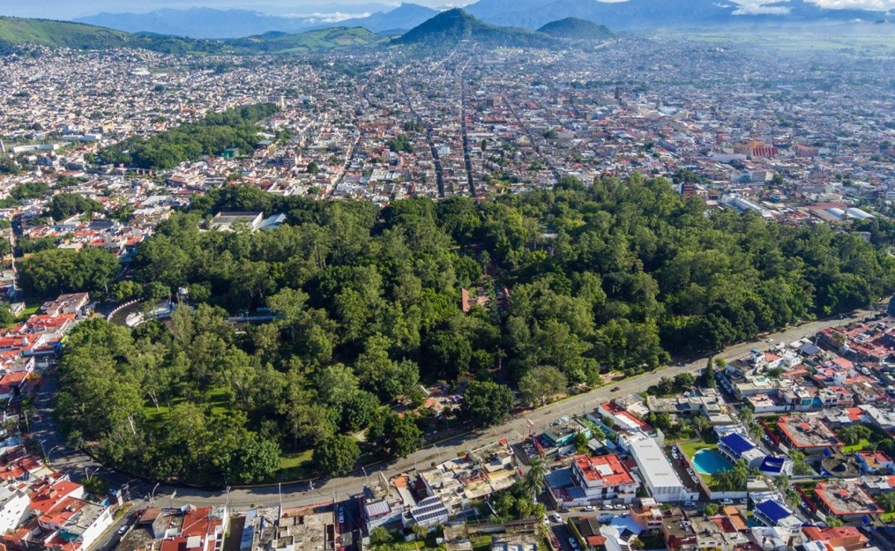
Parque La Loma
Espacio recreativo tradicional con trenes de vapor históricos y áreas verdes.
CN Tower
Torre de telecomunicaciones de 553m, ícono arquitectónico global.
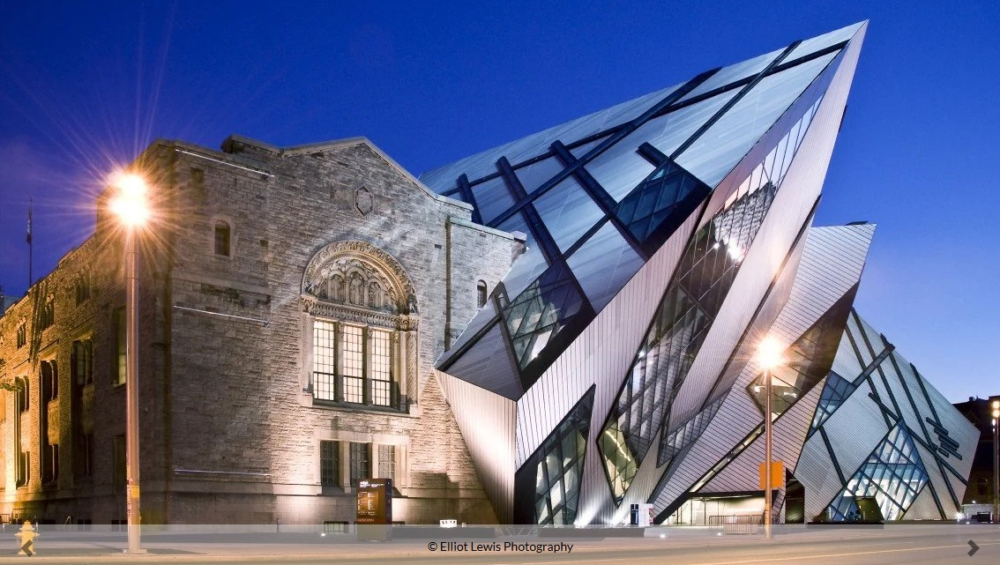
Royal Ontario Museum (ROM)
Museo de cultura universal y ciencias naturales con arquitectura 'El Cristal'.
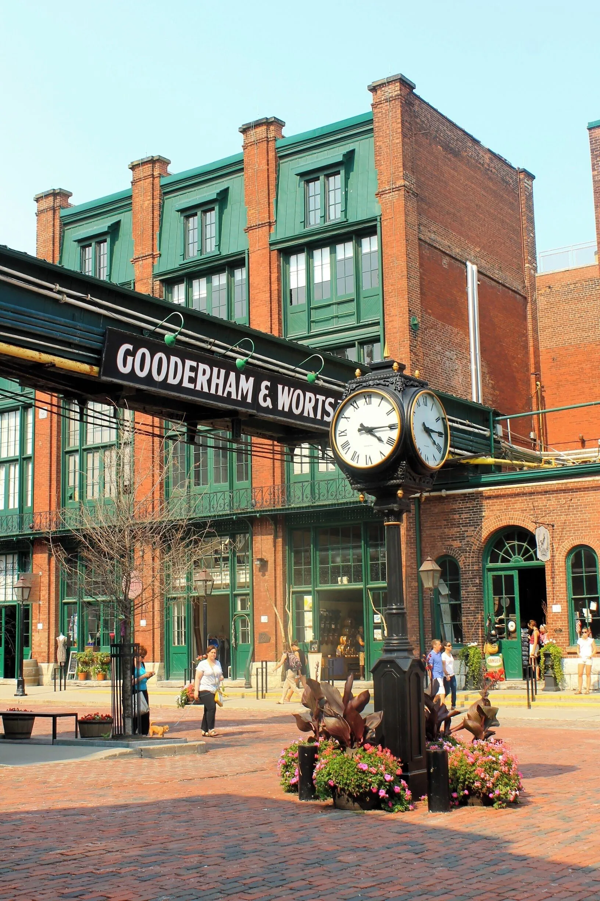
Distillery District
Distrito peatonal victoriano industrial restaurado con galerías y cafés.
🇲🇽 Ritmo Diario en Tepic
La vida transcurre con cercanía. El transporte público en combis/camiones urbanos, la caminata por el Mercado Juan Escutia y las tardes familiares en plazas caracterizan un estilo convivencial cálido.
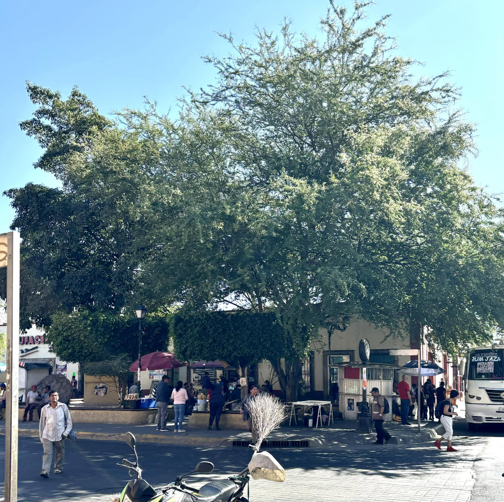
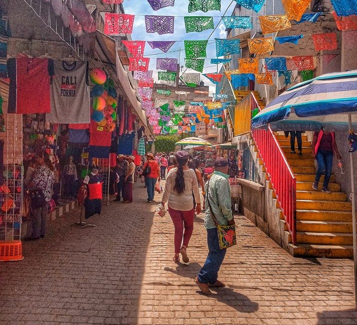
🇨🇦 Ritmo Diario en Toronto
Una metrópolis hiperconectada por el sistema TTC (Subway, Streetcars, GO Trains) y la red subterránea PATH. El ritmo es acelerado, enfocado en productividad, eventos multiculturales y parques urbanos.
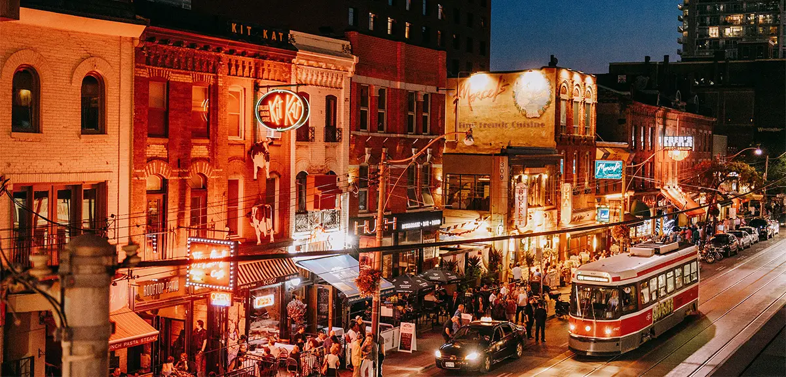
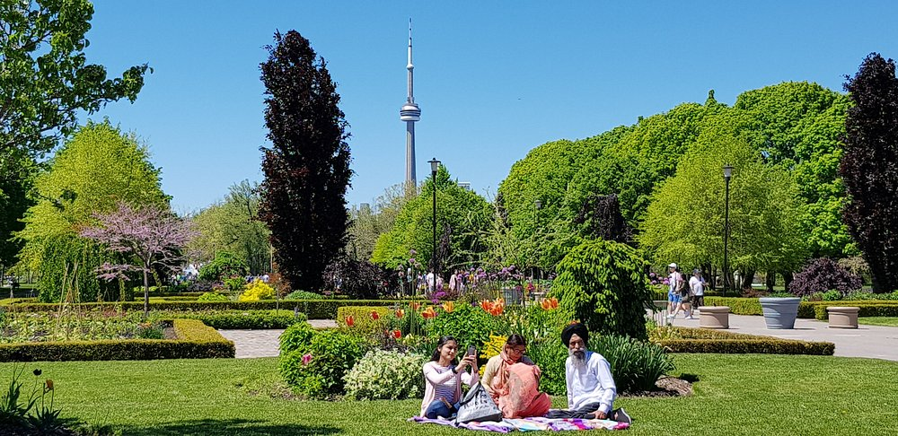
Presupuesto Diario Estimado (Comparativa)
Viajar a Tepic (TPQ)
- Aeropuerto: Aeropuerto Internacional de Tepic (TPQ).
- Mejor época: Noviembre a Abril (temporada seca y fresca).
- Requisitos: Pasaporte / Identificación oficial.
- Conexiones: Riviera Nayarit, San Blas, Santa María del Oro.
Checklist Viajero Tepic 0/4
Viajar a Toronto (YYZ)
- Aeropuerto: Toronto Pearson International Airport (YYZ).
- Mejor época: Mayo a Septiembre (verano cálido y templado).
- Requisitos: eTA (Autorización Electrónica) o Visa.
- Conexiones: Tren UP Express directo a Union Station.
Checklist Viajero Toronto 0/4
Mitos vs. Realidades (Interactivo)
Haz clic en cualquier tarjeta para desmentir prejuicios y descubrir la realidad sociocultural de cada ciudad.
«Tepic es solo un punto de paso sin atractivo cultural propio.»
¡Falso! Tepic es una capital con viva Herencia Wixárika, museos virreinales, el histórico Parque La Loma y una gastronomía galardonada a nivel nacional.
«Toronto es una metrópolis fría e impersonal sin identidad local.»
¡Falso! Su identidad radica en ser el 'mosaico del mundo': un tejido de vecindarios vibrantes donde se celebran más de 200 orígenes étnicos en armonía.
«El clima en Tepic es sofocante durante todo el año.»
¡Incorrecto! Al encontrarse a 915 msnm rodeada de valles y bosques, Tepic posee mañanas y noches frescas la mayor parte del año.
«En Toronto solo se habla inglés en el ámbito público.»
¡Falso! El 45% de los residentes habla una primera lengua distinta al inglés o francés, y los anuncios de servicios públicos están en múltiples idiomas.
Tabla Comparativa de Indicadores Urbanos
| Indicador | Tepic, Nayarit 🇲🇽 | Toronto, Ontario 🇨🇦 |
|---|---|---|
| Clima Predominante | Cálido subhúmedo / Templado (18°C - 31°C) | Continental húmedo (-10°C a 27°C) |
| Densidad Poblacional | Media (~2,100 hab/km²) | Alta (~4,330 hab/km²) |
| Idioma Principal | Español (Lenguas originarias: Wixárika, Náayeri) | Inglés (Multilingüe: +160 idiomas spoken) |
| Movilidad Principal | Autobús urbano, Combis, Auto vehicular | Metro, Tranvía, GO Transit, Red Bicicletas |
| Entorno Natural | Valle volcánico, Cerro San Juan, Ríos | Lago Ontario, Cañadas (Ravines), Islas |
Reflexión: Dos Formas de Habitar
«El tamaño de una ciudad no determina la profundidad de su sentido de comunidad. Mientras Toronto enseña al mundo sobre la integración global y el dinamismo vertical, Tepic demuestra el valor inestimable de la cercanía humana, la paciencia del paisaje y la identidad arraigada.»
Espacio de Notas del Usuario
Fuentes y Referencias
INEGI & Gobierno de Nayarit
Datos demográficos, cartográficos y socioculturales del municipio de Tepic.
www.inegi.org.mxStatistics Canada & City of Toronto
Estadísticas de población, diversidad cultural y datos socioeconómicos de Toronto.
www.toronto.ca